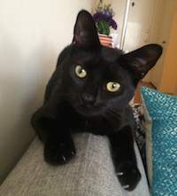
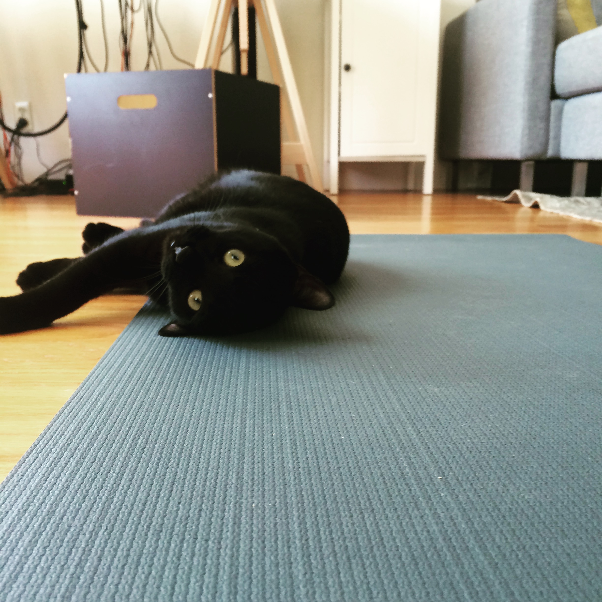

Sade was born in September 2015. She lived a tough life as a baby on the streets of Berkeley for her first month, before being rescued by a feral cat group and brought to the SPCA in San Francisco. She spent two months being nursed back to health and waiting to be adopted. Kittens usually go quickly, but black cats have a hard time getting adopted and she was quite shy. We fell in love with her immediately when we visited the SPCA on Christmas Eve. We named her Sade, after the singer.
Sade lived in the bathroom for the first week. We would cram into the bathroom and read or watch Warriors game with her. She started to warm to us and eventually began exploring the rest of the apartment. She rules the house now. She spends days sleeping and nights waking me up. She loves basketball, water, feathers, yoga, Q-tips, and snuggling. She's just earned to fetch and play tag. She's loves when we drink wine, and looks forward to playing with teh foil cap and cork -- also watching the wine pour.